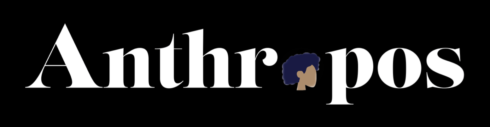

Anthropos
Anthropos is a design-focused campaign that Jeffrey [Last Name] and I developed for our Multimedia Project Lab final. We focused on homelessness in New York City, conducting thorough research to identify contributing factors and proposing actionable solutions. The campaign offers resources to connect individuals in need with support and aims to raise awareness through thoughtful design.
Items created:
Logo and visuals: Adobe Illustrator & Photoshop
Development: Replit
Deployment: Netlify